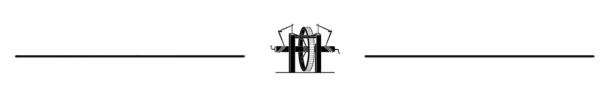
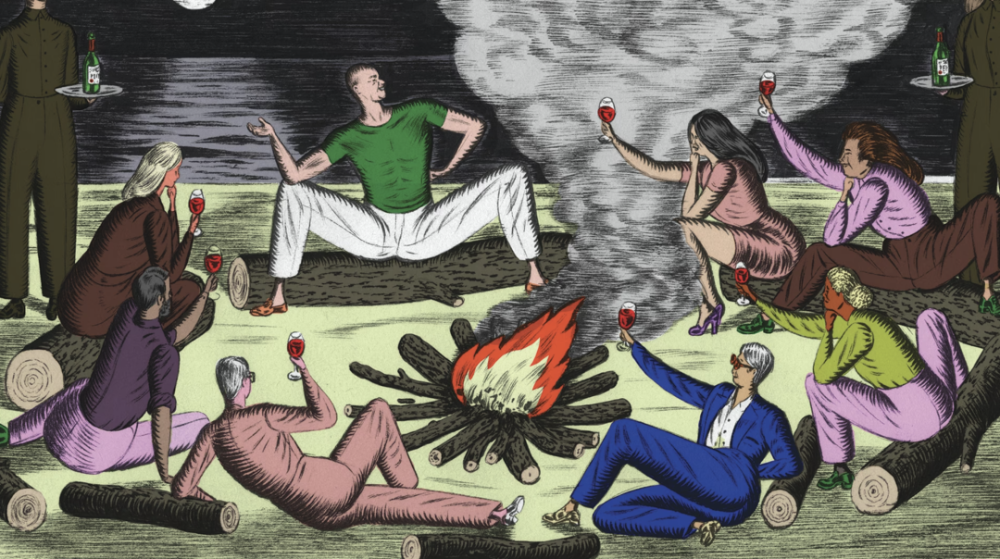
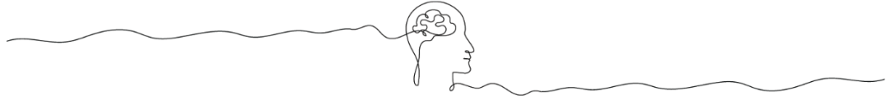
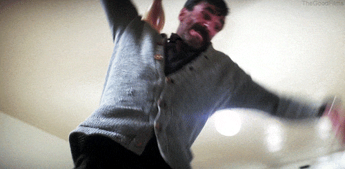
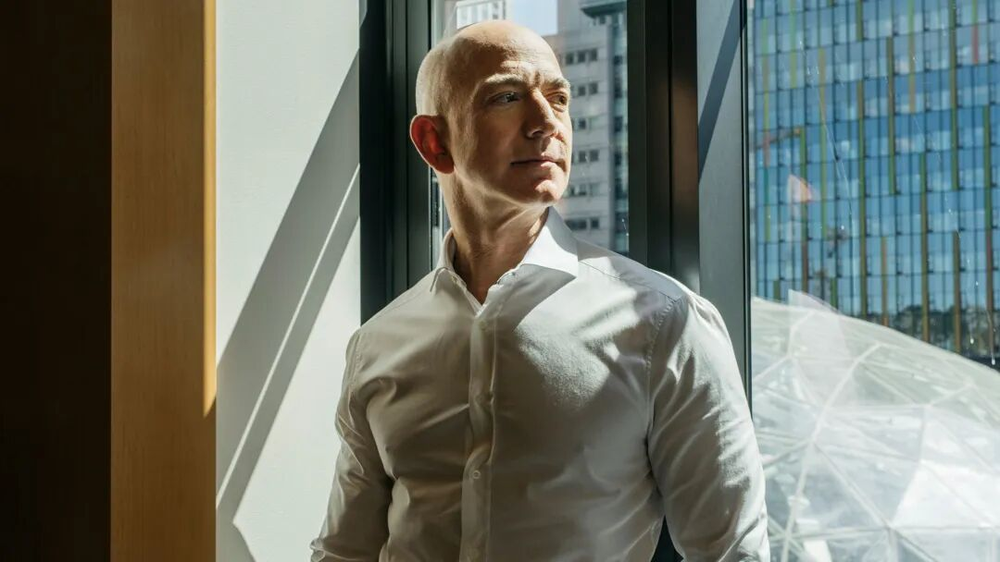
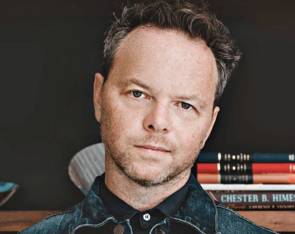

💡 我在贝佐斯私人静修营，对亿万富翁们的所见所闻
What I saw at Bezos' billionaire retreat


当财富积累accumulation[əˌkjuːmjəˈleɪʃn] n. 积累；积聚到极端程度，金钱不再只是资源，而是一种可以消解后果的力量。在这种“无后果”的世界里，错误可以被购买性地抹去，异议dissent[dɪˈsent] n. 异议；反对意见可以被轻易清除，人际关系也逐渐沦为利益交换的网络。
正如今天文章作者所指出的那样，问题并不在于这些富人变得更邪恶，而在于他们所处的环境使他们逐渐脱离了因果反馈与现实约束constraint[kənˈstreɪnt] n. 约束；限制，从而进入一种只由自我评判的封闭状态——在那里，“失败”失去意义，他人也不再真正存在。

在保罗·托马斯·安德森（Paul Thomas Anderson）2007年的电影《血色将至》（There Will Be Blood）结尾，丹尼尔·戴-刘易斯饰演的石油大亨tycoon[taɪˈkuːn] n. 大亨；巨头，此时已垂垂老矣且富可敌国，他用一根保龄球瓶将保罗·达诺饰演的传教士活活打死。达诺饰演的伊莱·桑迪曾在戴-刘易斯饰演的丹尼尔·普莱恩维尤白手起家的创业期与其宿怨颇深，如今他前来向普莱恩维尤兜售对方曾觊觎covet[ˈkʌvət] v. 觊觎；贪图已久的含油土地。但普莱恩维尤已经不需要那块地了，因为——正如他在现代电影史最著名的独白monologue[ˈmɒnəlɒɡ] n. 独白；独白戏之一中所解释的那样——他已经像喝奶昔一样，从相邻的地产中吸干了那块地下隐藏的所有石油。
急需用钱的埃利乞求plead[pliːd] v. 乞求；恳求贷款。普莱恩维尤却在保龄球馆里追逐pursue[pəˈsjuː] v. 追逐；追求他，并兴致盎然地杀死了他。事成之后，一名管家butler[ˈbʌtlə(r)] n. 管家走进来查看这番嘈杂所为何事。“我完事了（I'm finished），”普莱恩维尤大喊shout[ʃaʊt] v. 大喊；呼喊道。

《血色将至》剧照。© The Good Films
无论我看多少遍那部电影（我看了很多遍），我从未将那些话理解comprehend[ˌkɒmprɪˈhend] v. 理解；领悟为“我完蛋了”或者“我的行为现在将面临后果”。恰恰相反：这些话意味着普莱恩维尤通过获取财富和权力，已经完成了一场跨越道德宇宙边界boundary[ˈbaʊndri] n. 边界；界限的旅程。换句话说，他已经彻底“完事”了，他不再假装pretend[prɪˈtend] v. 假装；伪装人类社会的规则适用于他了。
2018年，我受邀参加了杰夫·贝佐斯在加州圣巴巴拉举办host[həʊst] v. 举办；主持的“篝火”（Campfire）静修营。这是亚马逊创始人每年举办的一次活动，他会邀请80多位嘉宾——名人、艺术家、知识分子intellectual[ˌɪntəˈlektʃuəl] n. 知识分子；脑力劳动者以及任何他认为有趣的人——在一处私人度假胜地共度三个夜晚。当时亚马逊刚刚找过我，希望将我的影视业务从迪士尼转投他们旗下，尽管我拒绝了（或者也许正因为我拒绝了），贝佐斯的团队依然邀请我参加了“篝火”营，或许是渴望用他的影响力influence[ˈɪnfluəns] n. 影响力；势力让我折服。
在十月一个温暖的周四，一支私人飞机编队分别从范奈斯（Van Nuys）和纽约机场起飞，风光十足地将嘉宾护送escort[ˈeskɔːt] v. 护送；陪同到圣巴巴拉。在那一刻，我只对还有谁会去有个模糊vague[veɪɡ] adj. 模糊的；含糊的的概念——名人、富豪、权势人物，还有我。我被告知，一旦抵达arrive[əˈraɪv] v. 抵达；到达，就会收到一份嘉宾名单。家属relative[ˈrelətɪv] n. 家属；亲属也在受邀之列；主办方会为每个孩子配备一名现场保姆nanny[ˈnæni] n. 保姆；保育员。
于是，我和妻子带着两个孩子从奥斯汀赶到洛杉矶，登上一架向北飞行45分钟的喷气式飞机，同机舱的还有一位电视大亨和一名喜剧comedy[ˈkɒmədi] n. 喜剧；喜剧作品演员。贝佐斯买断了那个周末整座比尔特莫度假村（Biltmore resort）以及街对面的海滩俱乐部club[klʌb] n. 俱乐部；会所。他聘请了一家来自拉斯维加斯的保安公司来确保我们的安全和隐私privacy[ˈprɪvəsi] n. 隐私；私密。甚至连天气都透着一股昂贵的气息，当我们被领进房间时，发现设计师款礼品袋里塞满了各种奢侈品luxury[ˈlʌkʃəri] n. 奢侈品；奢华。
每天早晨，我们聚集在演讲厅听取演示demonstration[ˌdemənˈstreɪʃn] n. 演示；示范。如果你看过TED演讲，你就会明白那种形式format[ˈfɔːmæt] n. 形式；格式。我去的那一年，一位现任最高法院大法官接受了访谈，还有一位神经学家neurologist[njʊəˈrɒlədʒɪst] n. 神经学家讲述了假肢技术的进步。下午和晚上，我们被鼓励在美酒和四道菜的正餐间交流思想，没有既定的目的——换句话说，就是与地球上一些最顶尖的人才建立人脉network[ˈnetwɜːk] n. 人脉；网络。我听到最频繁frequent[ˈfriːkwənt] adj. 频繁的；经常的的一个问题是：“我为什么会在这儿？”
“我为什么会在这里？”那位80年代的华丽glamorous[ˈɡlæmərəs] adj. 华丽的；迷人的金属歌手问道（此处应该指的是“皇后”乐队的那首《Eyes of a Stranger》。编者注）。“我为什么会在这里？”普利策奖得主、著名的人类学家anthropologist[ˌænθrəˈpɒlədʒɪst] n. 人类学家、总统史学家也纷纷发问。只有电影明星和亿万富翁们没有这种疑问doubt[daʊt] n. 疑问；怀疑：他们早就习惯了这种场面。事实证明prove[pruːv] v. 证明；证实，存在着一个所谓的“思想节巡回赛”。许多科技亿万富翁都会举办这种活动，如果你恰好coincide[ˌkəʊɪnˈsaɪd] v. 恰好；巧合在那份正确的名单上，你一年中大部分时间都可以周游世界，吃着和牛，与史上最著名的脱口秀主持人讨论如何让世界变得更美好。
周末就是这样开始的。而它是这样结束的：我妻子在湿草地上滑倒，摔断了手腕wrist[rɪst] n. 手腕；腕部，我和两个孩子都染上了手足口病。这不是在开玩笑joke[dʒəʊk] v. 开玩笑；说笑。我们中的一员吊着胳膊arm[ɑːm] n. 胳膊；手臂回了家；另外三位则在脸上和四肢limb[lɪm] n. 四肢；肢体上长满了发痒、疼痛的红水泡。如果你正在寻找上帝的启示revelation[ˌrevəˈleɪʃn] n. 启示；揭示，想知道和地球上最富有的人混在一起是否适合你，那么当他接连降下两场“瘟疫”而非一场时，你最好留神。总之，我们再也没回过“篝火”营，也再没收到过邀请invitation[ˌɪnvɪˈteɪʃn] n. 邀请；请柬。
第二晚喝酒时，一家大型经纪broker[ˈbrəʊkə(r)] n. 经纪；经纪人公司的老板问我这个周末感觉如何。我说：“我职业生涯career[kəˈrɪə(r)] n. 职业生涯；事业的大部分时间都在试图弄清世界是如何运作的。我没想到，我可以直接来这里问那些真正掌控control[kənˈtrəʊl] v. 掌控；控制世界的人。”在某种程度上，我是在开玩笑。一个另类乡村乐队的主唱当然掌控不了世界，后来被指控accuse[əˈkjuːz] v. 指控；控告行为不端的某著名作家也一样。但当我应邀身处那座高级度假村时，我终于确切理解了人们谈论“精英elite[eɪˈliːt] n. 精英；精华”时到底指什么。
坐在讲堂里，拿着笔记本，听着一位名厨解释他的人道主义humanitarian[hjuːˌmænɪˈteəriən] n. 人道主义；人道主义者工作，你很容易觉得世界问题的解决方案就近在咫尺。然而，环顾四周那些只在杂志或银幕上见过的面孔，我产生了一个令人不安的启示：这就是成就带来的傲慢arrogance[ˈærəɡəns] n. 傲慢；自大。在某一领域domain[dəˈmeɪn] n. 领域；范围被宣称为天才，就会开始相信自己在所有领域都是天才。
此时此地，我们80人的净资产总和虽超过一座小城市，但与主人的财富和统治力相比仍微不足道negligible[ˈneɡlɪdʒəbl] adj. 微不足道的；可忽略的。他如何看待regard[rɪˈɡɑːd] v. 看待；认为这场活动？是将其视为改变世界的第一步，还是炫耀flaunt[flɔːnt] v. 炫耀；夸示自己影响力和权势的作秀？

2020年9月2日，贝佐斯其个人财富wealth[welθ] n. 财富；财产为目前历史最高值，达到2123亿美元。© CNN
那个周末，贝佐斯无处不在ubiquitous[juːˈbɪkwɪtəs] adj. 无处不在的；普遍存在的——穿着紧身T恤，笑声响亮得过头，双臂揽着他十几岁的儿子们。他当时刚成为世界第二位“千亿富翁”，净资产徘徊hover[ˈhɒvə(r)] v. 徘徊；盘旋在1120亿美元左右，大约是今天的一半。那个此前无法想象的数字，让他在这个拥有80亿人口的星球上显得独一无二unique[juˈniːk] adj. 独一无二的；独特的，你在房间里就能感受到这一点。甚至连我们中最富有、最出名的人，也被这种“不可能的财富”所散发radiate[ˈreɪdieɪt] v. 散发；辐射的能量所吸引。
尽管我们当时并不知情informed[ɪnˈfɔːmd] adj. 知情的；了解情况的，贝佐斯的第一段婚姻将在几周后宣告结束。那个周末，我对他的妻子最深刻的印象是忧郁melancholy[ˈmelənkəli] n. 忧郁；愁思，尽管贝佐斯大张旗鼓地扮演着“顾家好男人”的角色。事后看来，正是那场表演让我记忆犹新memorable[ˈmemərəbl] adj. 记忆犹新的；难忘的。2018年的杰夫·贝佐斯表现得好像他依然在意人们对他的印象，依然相信他的财务和社会价值会受到负面舆论opinion[əˈpɪnjən] n. 舆论；意见的影响。他当时依然相信，他的行为behavior[bɪˈheɪvjə(r)] n. 行为；举止是有后果的。他还没有像丹尼尔·普莱恩维尤那样，将自己从人类社会的规则中解脱liberate[ˈlɪbəreɪt] v. 解脱；解放出来。
八年后，贝佐斯与另外两位世界顶级premier[ˈpremiə(r)] adj. 顶级的；首要的富豪——马克·扎克伯格和埃隆·马斯克——显然已将“后果”的世界抛在脑后。他们漂浮在一个星球大小的感觉剥夺deprive[dɪˈpraɪv] v. 剥夺；使丧失舱里，其行为只能由他们自己审判。
我越接近财富的世界，就越明白：真正的富有并不意味着积攒hoard[hɔːd] v. 积攒；囤积足够的钱去买超级游艇、私人飞机或一百万英亩的土地。它意味着一切实际上actually[ˈæktʃuəli] adv. 实际上；事实上都变成了免费的。任何资产asset[ˈæset] n. 资产；财产都可以获取，但任何东西都不会失去，因为对于即将成为万亿富翁的人来说，任何程度的损失都无法显著改变他们的全球地位或个人权力。对他们而言，“失败”这个词已经失去了意义meaning[ˈmiːnɪŋ] n. 意义；含义。
这种坚不可摧的感觉具有深远profound[prəˈfaʊnd] adj. 深远的；深刻的的心理影响。如果一切都是免费的，凡事都无所谓，那么世界和其他人就仅仅是为了被他们支配dominate[ˈdɒmɪneɪt] v. 支配；统治而存在的（如果他们还承认他人存在的话）。这与传统的自恋narcissism[ˈnɑːsɪsɪzəm] n. 自恋；自我陶醉不同，传统的自恋中，宏大但脆弱的自我形象可能会掩盖深层的自卑。我所说的是一种自我定义：个体膨胀inflate[ɪnˈfleɪt] v. 膨胀；使扩大到了宇宙的大小，而宇宙随之消失。
最近被问及是否有任何力量可以制约restrict[rɪˈstrɪkt] v. 制约；限制他的权力时，川普总统——他本人也是亿万富翁，且是美国历史上最富有的总统——说道：“有的，有一件事。我自己的道德准则code[kəʊd] n. 准则；规范。我自己的思想thought[θɔːt] n. 思想；思维。它是唯一能阻止prevent[prɪˈvent] v. 阻止；预防我的东西。”不是国内法或国际法，不是选民的意志，也不是上帝，更不是世俗secular[ˈsekjələ(r)] adj. 世俗的；非宗教的与宗教生活中传承百年的道德准则。
发展心理学的数十年研究表明，道德推理reasoning[ˈriːzənɪŋ] n. 推理；论证是通过“后果”发展起来的——这未必是指惩罚，而是指体验你的行为对他人的影响，接收诚实的反馈，以及不得不适应现实原本的样子，而不是你希望它成为的样子。问题不在于富人变得邪恶evil[ˈiːvl] n. 邪恶；罪恶，而在于他们所处的环境，已经不再教会他们那些普通人只需生活在一个会对自身行为产生反馈的世界中，就不得不学会的东西。当你能用金钱摆平任何错误，当你能解雇dismiss[dɪsˈmɪs] v. 解雇；解散任何与你意见相左的人，当你的社交圈完全由对你有所求的人组成时，人类赖以感知“他人是真实存在的”这一基本机制便熄灭了。
当彼得·蒂尔（Peter Thiel）说“我不再相信自由与民主是兼容compatible[kəmˈpætəbl] adj. 兼容的；相容的的”时，他谈论的不是你的自由，而是他自己的。你并不存在。当马斯克将电锯砍向联邦federal[ˈfedərəl] adj. 联邦的；联盟的政府的行为当作他所谓的“DOGE”内部笑话的一部分时，他的神态就像是个相信凡事皆无所谓的人——贫困、混乱、人类的苦难都与他无关。他只是在找乐子。甚至这场极具破坏性destructive[dɪˈstrʌktɪv] adj. 破坏性的；毁灭的的实验最终没有产生任何实际的经济收益也无关紧要。对他而言，结果是注定destined[ˈdestɪnd] adj. 注定的；命定的的：他只会赢，因为“输”已经失去了意义。
2025年2月20日，在美国马里兰州奥克森山的盖洛德国家度假会议中心举行的年度保守派政治行动大会（CPAC）上，伊隆·马斯克手持阿根廷总统米莱（Javier Milei）赠送的刻有“自由万岁”字样的电锯。© Saul Loeb/AFP
自2024年大选以来，右翼阵营，尤其是科技亿万富翁群体，在哲学理念上发生了转变，他们开始妖魔化demonize[ˈdiːmənaɪz] v. 妖魔化；使恶魔化同理心。马斯克称同理心是“西方文明civilization[ˌsɪvəlaɪˈzeɪʃn] n. 文明；文化的根本弱点”。他将其视为自由派社会挥舞的武器，用来胁迫coerce[kəʊˈɜːs] v. 胁迫；强迫原本理性的人做出违背自身利益的事。在他看来，同理心是被他人强加impose[ɪmˈpəʊz] v. 强加；施加在你身上的东西——他们利用这一弱点，可以获取你的资源和意志。这种对同理心作为一种人类价值的否定denial[dɪˈnaɪəl] n. 否定；否认，为那些根本不想感受任何情感的人提供了掩护。如果同理心是问题所在，那么缺乏同理心就不是缺陷flaw[flɔː] n. 缺陷；瑕疵，而是一种优势。
在“篝火”营的最后一天，我终于finally[ˈfaɪnəli] adv. 终于；最终见到了贝佐斯。那是午餐时间，当时我妻子已经摔断了手腕。我走过去感谢他的款待hospitality[ˌhɒspɪˈtæləti] n. 款待；好客，他问我们的“篝火”体验如何。我告诉他一切都很好，但遗憾regret[rɪˈɡret] n. 遗憾；懊悔的是，那天早上我妻子和6岁的儿子踢球时在湿草地上滑倒，摔断了手腕。
就在前一天晚上，我们还站在海滩俱乐部的泳池边，看着一群花样游泳运动员完成了完美perfect[ˈpɜːfɪkt] adj. 完美的；理想的的水中表演。我和一位著名小说家novelist[ˈnɒvəlɪst] n. 小说家聊了聊，他说：“我只是不明白我为什么会在这里。”一位著名的摇滚明星正准备开始一场不插电演奏performance[pəˈfɔːməns] n. 演奏；表演。名厨做了西班牙海鲜饭。但在我的皮肤深处，一场残酷cruel[kruːəl] adj. 残酷的；残忍的的痘疹正悄然滋生。
第二天早上，我妻子摔倒了，我发现自己坐在一辆黑色SUV里，身旁是一队私人保安承包商contractor[ˈkɒntræktə(r)] n. 承包商；承包人，他们护送我们从圣巴巴拉急诊室的后门进入，她在那里立刻得到了接诊和治疗。我们赶回来时，正好赶上观看最高法院大法官从华盛顿特区通过Zoom连线发表deliver[dɪˈlɪvə(r)] v. 发表；发表演讲讲话。
一小时后，贝佐斯问我：“你的‘篝火’营过得怎么样？”因为我是一个诚实honest[ˈɒnɪst] adj. 诚实的；正直的的人，也因为我自己招待过客人，我决定应该让他知道出了一点状况，但他的团队反应迅速且非常乐于助人。需要说明的是，我绝非在责怪他，也不是在勒索extort[ɪkˈstɔːt] v. 勒索；敲诈这位地球上最富有的人。相反，我只是在向贝佐斯——同样作为丈夫和父亲的他——提供一次简短的人类情感联结bond[bɒnd] n. 联结；纽带。
但当我告诉他发生了什么时，贝佐斯一脸惊恐horrified[ˈhɒrɪfaɪd] adj. 惊恐的；震惊的。他没有说“我很抱歉”，也没有说“你需要什么吗？”相反，他做了个鬼脸，随即一位助手assistant[əˈsɪstənt] n. 助手；助理过来把他拉走了。当有机会表达同情sympathy[ˈsɪmpəθi] n. 同情；同情心，哪怕只是做做样子，他都选择了逃避。
几小时后，在回家的私人飞机上，一位著名的电影制片人producer[prəˈdjuːsə(r)] n. 制片人；制作人递给我妻子一条毯子。我孩子们的脸上布满了斑点spot[spɒt] n. 斑点；污点。在我的指甲缝里，红色的斑块正开始隆起bulge[bʌldʒ] v. 隆起；膨胀。
世界从来都由富人wealthy[ˈwelθi] adj. 富人的；富裕的掌控。镀金时代的“土匪大亨”们（Robber barons）曾因积累财富时的冷酷无情而臭名昭著notorious[nəʊˈtɔːriəs] adj. 臭名昭著的；声名狼藉的——他们会雇佣平克顿侦探（Pinkertons）去开枪射杀罢工的工会成员。但他们当时是与周围的世界直接博弈的，利用财富和权力强行将世界塑造shape[ʃeɪp] v. 塑造；形成为对他们最有利可图的模样。然而，尽管当今的亿万富翁们显然也在操纵manipulate[məˈnɪpjuleɪt] v. 操纵；操控社会以谋求利益最大化，但另一种现象也在发生——那是一种与因果逻辑、与意义、与历史现实的彻底脱节。这些人不再觉得有必要为了成功而去改变世界，因为无论我们其他人遭遇encounter[ɪnˈkaʊntə(r)] v. 遭遇；遇到什么，他们的成功都已是囊中之物。
“我完事了，”丹尼尔·普莱恩维尤大喊道。他欢快地盘踞occupy[ˈɒkjupaɪ] v. 盘踞；占据在属于他自己天国那光洁的地板上。尽管他刚刚犯下罪行crime[kraɪm] n. 罪行；犯罪，但他从未感到如此自由。
《血色将至》剧照。©
The Good Films

诺亚·霍利（Noah Hawley），美国编剧、电视剧制作人和作家，FX剧集《冰血暴》（Fargo）与《异形：地球》（Alien: Earth）的主创，同时也是小说《颂歌》（Anthem）的作者。
文/Noah Hawley
原文/www.theatlantic.com/magazine/2026/05/billionaire-consequence-free-reality/686588/
本文基于创作共享协议（BY-NC），由树上的男爵在利维坦发布
文章仅为作者观点，未必代表利维坦立场